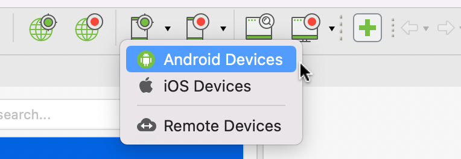
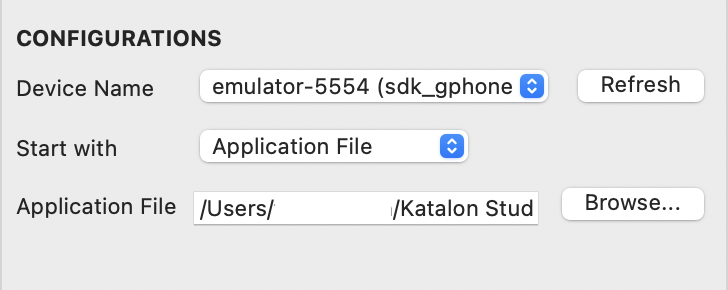
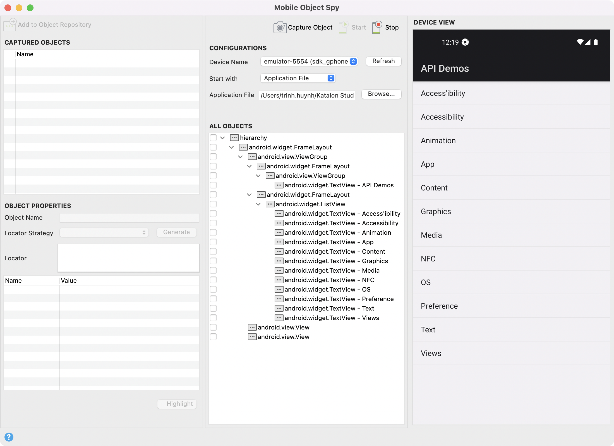
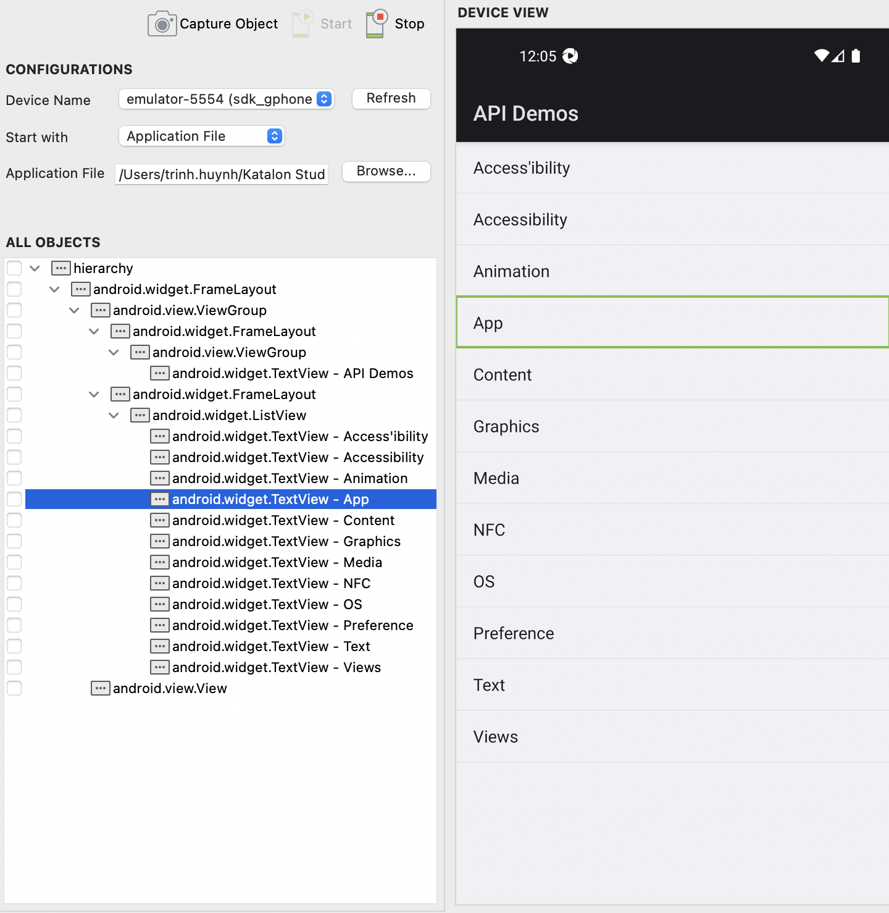
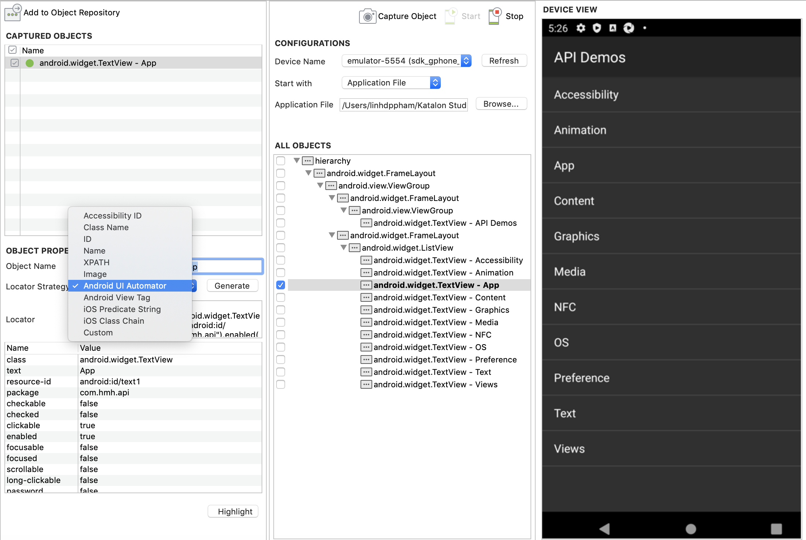
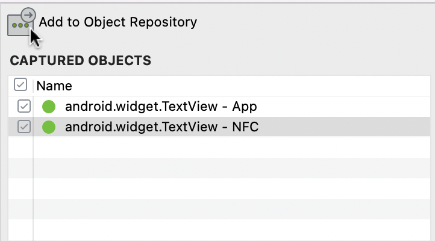
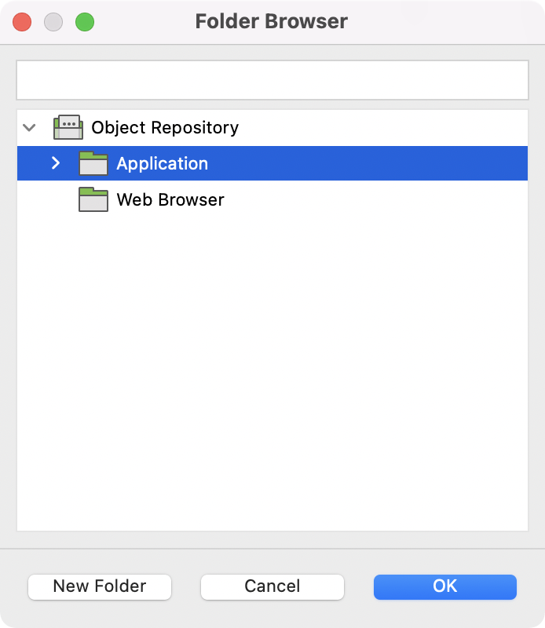
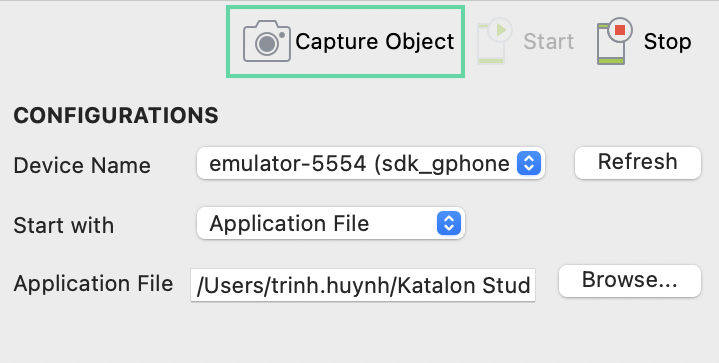

Spy mobile utility in Katalon Studio
Katalon Studio fully supports selector strategies supported by Appium except for Android Data Matcher. To learn more about locator strategies, see Locator strategies for detecting a mobile object.
Katalon Studio version 7.6 onwards.
You have configured the environment for mobile testing. See [Mobile] Android Setup in Katalon Studio.
- From the main Toolbar, click on the Spy Mobile icon and select your device type, for instance, Android Devices.
- In the displayed Mobile Object Spy dialog, specify the following information at the Configurations section:

Device Name: A mobile device where Katalon Studio launches the application. All of your connected devices should be displayed in this list
- Start with: In the drop-down list, you can select either Application File or Application ID
Application File: Browse your tested application (
.apkfile for Android,.ipafor iOS)Application ID: Specify the application ID of your tested application, which is either the package name of an Android app or the bundle identifier of an iOS app
- Click Start to begin spying the application under test (AUT). Wait until the AUT is launched, and the Device View and All Objects are ready for you to capture objects of the AUT.
- You can click on any object either in the tree of All Objects or in Device View. Katalon Studio highlights their counterpart accordingly for verification.
Device View is a simulator of the device's screen.
All Objects captures and organizes all the displayed mobile objects of Device View in a tree.

To make sure the Device View displays the current screen of the AUT on the device, you can click on the Capture Object button to reload Device View and refresh All Objects.
- Tick on any object checkbox in All Objects. Katalon Studio captures the selected objects and displays objects' properties in the Object Properties table.

The most important property of an object is its locator strategy and value. The default locator is a unique value in detecting that object. If you prefer another locator strategy among the provided option, you can choose it and generate a new locator. Then click Highlight to see if your newly updated locator can detect the target object on its screen correctly.
- Click Add to Object Repository to save them to Katalon Studio.
- In the displayed Folder Browser dialog, you can decide where to save the captured objects. Select your preferred location then click OK.The captured objects will be added to Object Repository accordingly.

You can continue with the current mobile screen or navigate to other interfaces as needed.Note:- Appium known limitation:You may get incorrect object highlighting when rotating the device to landscape view.
- Workaround: After rotating, you need to click on the Capture Object button to refresh the All Objects tree, then the highlighting will work normally.
